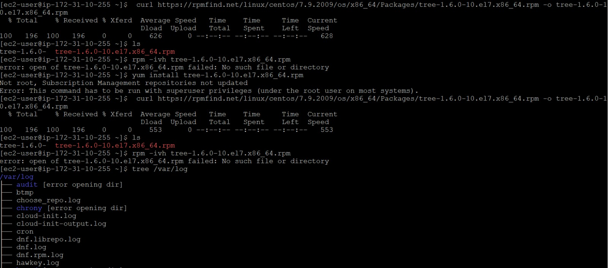
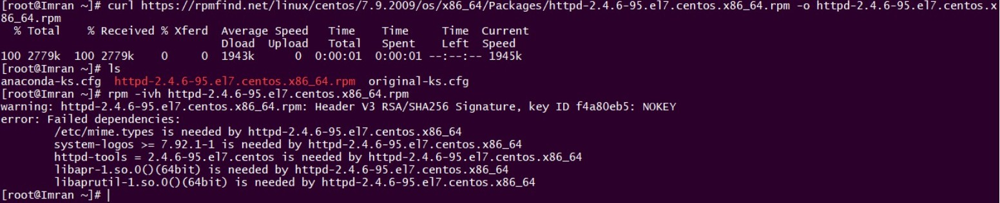

For CentOS
To install Tree
# curl https://rpmfind.net/linux/centos/7.9.2009/os/x86_64/Packages/tree-1.6.0-10.el7.x86_64.rpm -o tree-1.6.0 10.el7.x86_64.rpm
# rpm -ivh tree-1.6.0-10.el7.x86_64.rpm
To install httpd
# curl https://rpmfind.net/linux/centos/7.9.2009/os/x86_64/Packages/httpd-2.4.6-95.el7.centos.x86_64.rpm -o httpd 2.4.6-95.el7.centos.x86_64.rpm
# rpm -ivh httpd-2.4.6-95.el7.centos.x86_64.rpm
Due to Dependencies its failing and it will be installed one we install all the dependencies. But what if we have Hundreds of dependencies, And that can be solved easily by other package managers like YUM .
repos. d/ directory. It reads each YUM Repository configuration file to get the information required to download and install new software, resolves software dependencies and installs the required RPM package files. YUM Repository configuration files must: be located in /etc/yum.repos.d